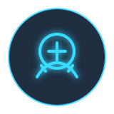
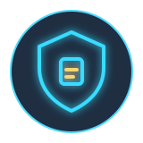

Firewall & WAF
ออกแบบ ติดตั้ง และปรับแต่ง firewall policy, VPN, IPS/IDS และ WAF เพื่อปกป้อง network และ web application
Cyber Security Solutions
Cyber Security Solutions ช่วยให้องค์กรป้องกัน ตรวจจับ ตอบสนอง และฟื้นตัวจากภัยคุกคามได้เป็นระบบ โดยทีม ATS ออกแบบแนวทางให้เหมาะกับโครงสร้างจริงของลูกค้า ตั้งแต่ Firewall, WAF, SIEM, SOC workflow, SOAR, incident response ไปจนถึงการทบทวนนโยบายความปลอดภัยหลังใช้งาน
บริการของเรา
Our Services
ออกแบบ ติดตั้ง และปรับแต่ง firewall policy, VPN, IPS/IDS และ WAF เพื่อปกป้อง network และ web application

เชื่อมต่อ log source สำคัญ สร้าง use case และแจ้งเตือนเหตุการณ์ที่ต้องติดตามแบบรวมศูนย์


กำหนดขั้นตอน monitor, triage, escalation และรายงาน เพื่อให้ทีมดูแล incident ได้ต่อเนื่องและตรวจสอบได้

วาง incident playbook และแนวทาง automation สำหรับเคสที่พบบ่อย เพื่อช่วยลดเวลาการตอบสนอง

ช่วยตรวจสอบเหตุการณ์เบื้องต้น แนะนำ containment และวางขั้นตอน recovery ให้ระบบกลับมาปลอดภัย


ตรวจทาน policy, account, access และ configuration baseline เพื่อลดช่องโหว่จากการตั้งค่าที่ไม่เหมาะสม
Customer Benefits
กลุ่มเทคโนโลยีที่รองรับ สามารถเพิ่มเติมโลโก้ผลิตภัณฑ์จริงได้ภายหลัง
Network security, application protection, VPN, IPS/IDS และ rule management
Log collection, correlation rule, dashboard, alert tuning และ SOC operation workflow
เชื่อมข้อมูล endpoint และ security event เพื่อช่วยเพิ่มมุมมองการตรวจจับภัยคุกคาม
Incident playbook, escalation path, containment checklist และ recovery guidance
พร้อมยกระดับความปลอดภัยไซเบอร์ขององค์กร?